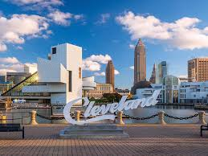

About Me

I was born in Cleveland and have lived in the area my entire life. Some of my hobbies include writing, music production and cooking. I was married in Pittsburgh this past summer and bought a house in Willoughby around the same time. We have one cat, and his name is Bartleby.
Education
I earned a B.S in Mathematical Economics and Creative Writing with a minor in Statistics from Baldwin-Wallace University. Over the course of my degree, I learned about topics such as Linear Algebra, Calculus, desiging empirical studies, and writing poetry and short stories. By taking classes that require both creative and critical thinking skills, I feel I have gained the tools to help me to approach problems from different angle.
Future Goals

Within the next year, I plan to be working as a full stack software developer. I have some professional experience related to IT, but often times those tasks would take a back seat to more sales support oriented tasks. In order to truly immerse myself in the coding community, I quit my job and joined the Cleveland Codes program at Tri-C. I expect to learn all the tehcnical skills I need to start as an entry-level web developer, but all the professional skills to be able to land an interview and make a lasting impression on any potential future employers.